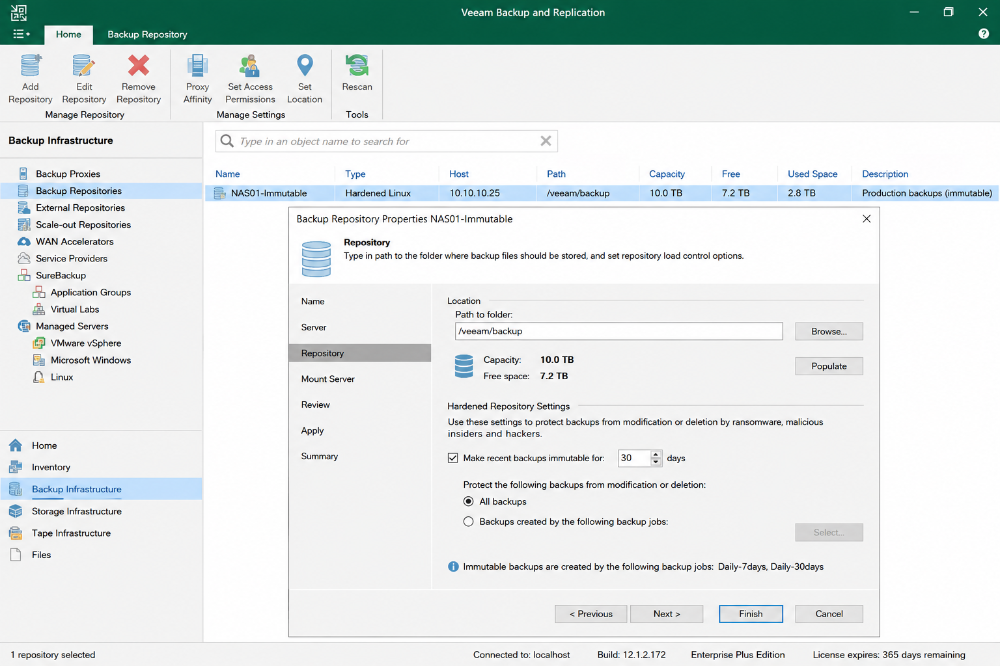

Objective
This check verifies that backup data is protected against modification or deletion.
Missing immutable protection can expose backups to:
- Ransomware attacks
- Malicious deletion
- Accidental modification
- Backup corruption
Prerequisites
- Access to the backup console
- User account with read or admin permissions
Verify Immutable Repository
Open the backup console and navigate to:
Backup Infrastructure → Backup Repositories
Open the repository properties and verify that:
- Immutable backups are enabled
- An immutability retention period is configured
- The repository supports immutable storage

Verify Immutable Backup Usage
Verify that critical backup jobs use the immutable repository.
- Production backups should target immutable storage whenever possible
- Immutable repositories should be operational and accessible
Result Interpretation
- ✅ OK – Immutable backup protection is enabled and operational.
- ⚠️ WARNING – Immutable protection exists but is partially configured or not used for all critical backups.
- ❌ NOK – No immutable backup protection is configured.
Immutable backup protection is considered a critical ransomware protection requirement.